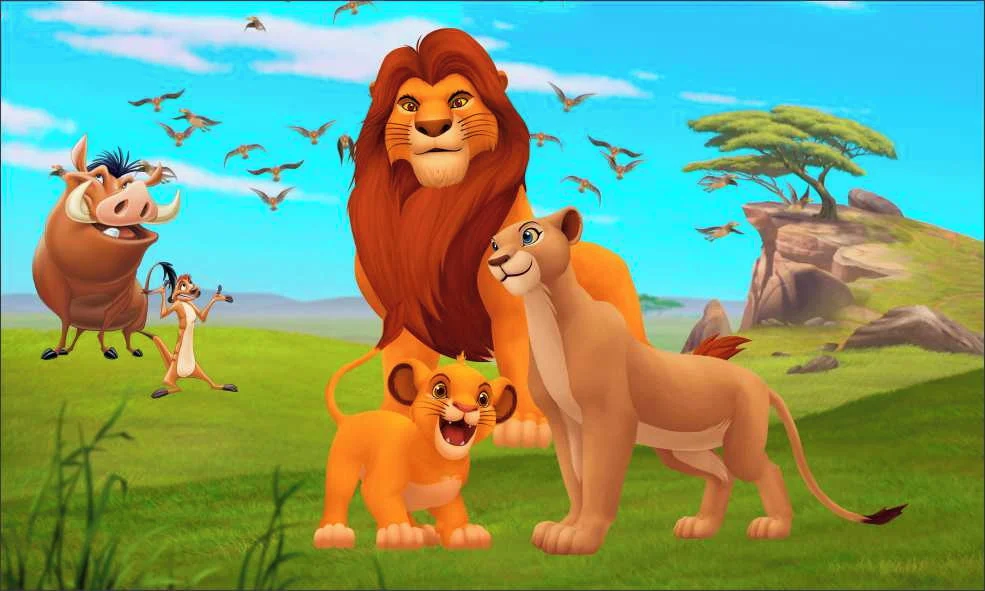

Rei Leão... Desenho que marcou a infância de muitos jovens...
Mufasa apresenta seu herdeiro, Simba, ao povo de Pedra do Rei. Scar, tio do príncipe, não aparece na cerimônia e deixa claro que tem sede de poder. O rei procura criar o seu filho transmitindo valores de responsabilidade e lembrando que um dia ele irá governar. Simba, no entanto, é uma criança e quer se divertir e buscar aventurasSabendo da chegada de hienas na região, Scar fala para Simba ir visitar um lugar proibido, para provar a sua coragem. Inocente, a cria vai e leva Nala, sua amiga. Lá, são atacados pelas hienas e só não são devorados porque Mufasa aparece para salvá-los.Mais à frente, no entanto, a armadilha do vilão é mortal. Deixando o príncipe numa estrada onde passava uma manada de búfalos, Scar faz com que o irmão vá salvar Simba. Quando Mufasa está pendurado numa ribanceira, pede ajuda do irmão, que o empurra. Simba assiste a tudo e vê o pai morto.Scar convence o sobrinho que a culpa foi dele e deve desaparecer para sempre. Simba está desmaiado no deserto quando é encontrado por Timão e Pumba. O suricato e o javali resolvem adotá-lo e ajudá-lo a sobreviver.
Simba cresce com eles, sem preocupações até que reencontra Nala e descobre que o reino está em perigo por causa de Scar. Inspirado pelas palavras do pai, que surge nas estrelas para guiá-lo, resolve regressar.De volta ao reino, reencontra a mãe, que pensava que ele tinha morrido. Luta com o tio, que confessa a morte de Mufasa e acaba sendo devorado pelas hienas.O novo rei se apaixona por Nala. No final do filme, assistimos à cerimônia de apresentação da filha dos dois. O seu povo celebra, está novamente unido e em harmonia.

Família feliz